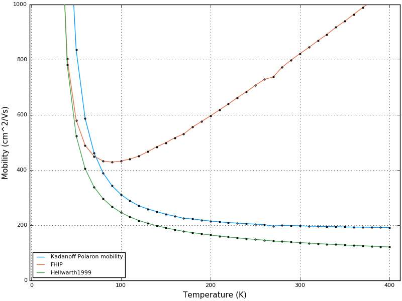

Examples
Perhaps the easiest way to understand the code is to see how it can be used for science. As an example system, we are going to look at some of the basic polaron properties of methylammonium lead-iodide perovskite.
The 'Feynman' units used internally set the LO phonon reduced frequency omega=1, hbar=1 and mass-of-electron=1.
Loading the Module
using PolaronMobility If you are running the module from outside the Julia package directory (i.e. you have cloned the repository elsewhere to more easily work on the codes), you can supplement the LOAD_PATH.
push!(LOAD_PATH,"../src/") # load module from local directoryα/alpha parameter
The Frohlich electron-phonon coupling parameter can be characterised by a dimensionless coupling, alpha (α). This gives the long-range ('non analytic') contribution from electrodynamic coupling into infrared active phonon modes.
\[\alpha = \frac{1}{2} \; \frac{1}{4\pi\epsilon_0} \: \left( \frac{1}{\epsilon_{optical}} - \frac{1}{\epsilon_{static}} \right ) \; \frac{e^2}{\hbar \omega} \; \sqrt{\frac{2m_e\omega}{\hbar}}\]
This is provided as a convenience function (with correct units!). Let us demonstrate by calculating α for CdTe, and compare it to literature values.
The call signature is: ϵ-optical, ϵ-static, phonon-frequency (THz), effective-mass (in mass-of-electron units).
α=frohlichalpha(7.1, 10.4, 5.08, 0.095)
println("CdTe α=",α," Stone 0.39 / Devreese 0.29")
#@test α ≈ 0.3 atol=0.1We get a value of 0.351.
Feynman athermal polaron
Tabulated by Schultz (Phys.Rev. 116, 1959. https://doi.org/10.1103/PhysRev.116.526) are some numeric solutions to the athermal Feynman model. These values are often reproduced in the textbooks (e.g. Feynman & Hibbs, Emended Edition, p. 319). For instance, Schultz gets for α=5, v=4.02, w=2.13 and E=-5.4401.
julia> v,w=feynmanvw(5.0)
(4.0343437574170915, 2.1400182510339403)
julia> F(v,w,5.0)
-5.440144454909065Single temperature phonon properties
Let us calculate the room-temperature (300 K) character of the electron-polaron in methylammonium lead iodide perovskite (MAPI). The parameters we use are as in Frost2017PRB.
The call signature to polaronmobility is: Temperature range, ϵ-optical, ϵ-static, phonon-frequency (Hz), effective-mass (in mass-of-electron units).
For electrons in MAPI, these are ϵ=4.5/24.1, f=2.25 THz, me=0.12 electron masses.
MAPIe=polaronmobility(300, 4.5, 24.1, 2.25, 0.12)This will think for a bit (as Julia just-in-time compiles the required functions), and then spits out a considerable amount of information to STDOUT.
Polaron mobility for system ε_Inf=4.5, ε_S=24.1, freq=2.25e12,
effectivemass=0.12; with Trange 300 ...
Polaron mobility input parameters: ε_Inf=4.500000 ε_S=24.100000 freq=2.25e+12 α=2.393991
Derived params in SI: ω =1.41372e+13 mb=1.09313e-31
T: 300.000000 β: 2.41e+20 βred: 0.36 ħω = 9.31 meV Converged? : true
Polaraon Parameters: v= 19.8635 w= 16.9621 || M=0.371360 k=106.845717
Polaron frequency (SI) v= 4.5e+13 Hz w= 3.8e+13 Hz
Polaron size (rf), following Schultz1959. (s.d. of Gaussian polaron ψ )
Schultz1959(2.4): rf= 0.528075 (int units) = 2.68001e-09 m [SI]
Polaron Free Energy: A= -6.448918 B= 7.355627 C= 2.912080 F= -3.818788 = -35.534786 meV
Polaron Mobility theories:
μ(FHIP)= 0.082053 m^2/Vs = 820.53 cm^2/Vs
μ(Kadanoff,via Devreese2016)= 0.019690 m^2/Vs = 196.90 cm^2/Vs
Eqm. Phonon. pop. Nbar: 2.308150
Gamma0 = 5.42813e+13 rad/s = 8.63914e+12 /s
Tau=1/Gamma0 = 1.15752e-13 = 0.115752 ps
Energy Loss = 1.28798e-08 J/s = 80.3893 meV/ps
μ(Hellwarth1999)= 0.013642 m^2/Vs = 136.42 cm^2/VsThe output is a little ad-hoc, and specific values are perhaps best understood with comparison to the code, and to the references to the original papers!
Initially the polaron state is solved for variationally. This involves varying v and w to minimise the miss-match between the trial (analytically solvable) polaron Hamiltonian action, and the true temperature-dependent free-energy (as specified by Osaka). The method uses automatic differentiation to get gradients for the optimisation procedure.
'Textbook' expressions that predict polaron character and mobilities make assumptions about v and w (usually that either v is small, or v=w), and rather than use the finite-temperature free-energies of Osaka, use a more simple athermal polaron energy function.
Values that can be directly derived from these v and w variational parameters are then displayed. This includes the phonon-drag mass renormalisation (M), the effective spring-constant of this drag (k), and the S.I. oscillation rates v and w in Hz. The Schultz polaron size (rf) is outputted in various units. The total polaron energy (as well as its decomposition into free-energy contributions) is also output (A,B,C; and F). Essentially we are just using Julia as a glorified scientific calculator at this point, but with the units checked.
The polaron theories are constructed in reduced units. Generally this means that energy is in units of ħω, and frequencies in a unit of ω (of the input phonon frequency). For convenience, these are re-printed in SI or more standard units.
Beyond Polaron Mobility theories:, the code enters its final phase and uses the v and w parameters specifying the polaron as an input to theories of mobility, and so directly calculate a charge carrier mobility.
The asymptotic 'FHIP' mobility (low T) is calculated, this can be most easily related to textbook expressions that directly infer a mobility from an α parameter. It lacks optical phonon emission, and so shows pathological high temperature (kT > ħω) behaviour.
The Kadanoff mobility (see the original paper) improves on this by assuming a Boltzmann process (independent scattering events). From this theory we can also get an average scattering time, which we relate to the time-scale of the polaron interacting with the phonon cloud, and so to the rate of polaron cooling.
Finally the Hellwarth1999 scheme is used, which goes back to the original 1962 FHIP paper, and directly carries out the contour integral for the polaron impedance function. We improve on this slightly by explicitly calculating with b, though the approximation b=0 makes very little difference for any so-far tested materials.
The data are also returned as a packed up in type of struct Polaron with fields of (T, Kμ, Hμ, FHIPμ, k, M, A, B, C, F, Tau, v, w, βred, rfsi, rfsmallalpha, α, mb, ω).
Hellwarth's multi-mode scheme
The above examples are slightly back-to-front - in that we've specified a single mode frequency, as if the material were a simple tetrahedral semiconductor with only one infrared active mode. (The Linear Optical 'LO' phonon mode.)
In order to use these theories with more complex (many atoms in a unit cell) materials of technological relevance, we must first reduce all of these Infrared-active phonon responses to a single effective one.
For this we will use the averaging scheme described in Hellwarth1999. Currently only the B scheme (athermal) is correctly implemented; a partial A scheme implementation is present.
Let's test it against the Hellwarth1999 literature data. The argument to the function is a table of frequencies (cm^-1) and infrared activities (unit does not matter, as long as it is consistent).
# Hellwarth et al. PRB 1999 Table II - BiSiO frequencies and activities
HellwarthII = [
106.23 8.86
160.51 9.50
180.33 20.85
206.69 10.05
252.76 27.00
369.64 61.78
501.71 52.87
553.60 86.18
585.36 75.41
607.29 98.15
834.53 89.36
]
println("Attempting to reproduce Hellwarth et al.'s data.")
println("\nB scheme: (athermal)")
HellwarthBScheme(HellwarthII)
println(" ... should agree with values given in Hellwarth(60) W_e=196.9 cm^-1 and Hellwarth(61) Ω_e=500 cm^-1")The output agrees to within three significant figures with the literatures values;
Hellwarth (58) summation: 0.15505835776181887
Hellwarth (59) summation (total ir activity ^2): 38777.7725
Hellwarth (59) W_e (total ir activity ): 196.92072643579192
Hellwarth (61) Omega (freq): 500.08501275972833Temperature-dependent behaviour
Getting temperature-dependent behaviour is a matter of sending a temperature range to the polaronmobility function.
MAPIe=polaronmobility(10:10:1000, 4.5, 24.1, 2.25, 0.12)Plotting
For publication, savepolaron outputs a column-delimited text file for post-production plotting (with gnuplot) or similar.
savepolaron("MAPI-electron",MAPIe)Example gnuplot scripts can be found in Examples and HalidePerovskites.
Built in plotting
The convenience function plotpolaron generates (and saves) a number of Plots.jl figures of the temperature dependent behaviour.
It has been separated off into its own submodule (PlotPolaron), so that the Plots.jl dependency does not slow down loading of PolaronMobility.jl.
To use it, we therefore need to inform Julia where to find PlotPolaron. A suitable initialisation script was kindly supplied by @wkearn:
using PolaronMobility, Plots
gr()
include(Pkg.dir("PolaronMobility","src","PlotPolaron.jl"))
using PlotPolaronAs with savepolaron, the call signature is output-file-string and then the polaron object which you have calculated.
plotpolaron("MAPI-electron",MAPIe)This will attempt to make fairly sensible defaults, and plot a lot of different data of sufficient quality for talk slides.
Much for the functionality has been unrolled into the Jupyter Notebook example, which should also be interactively-runnable from (https://juliabox.com). See the repository README.md for the latest information.
Here is a figure showing typical temperature-dependent behaviour of the three-different polaron mobility approximations, for MAPI.

Further examples
More complete examples are provided in Examples and HalidePerovskites.